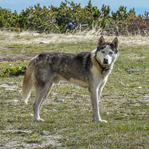
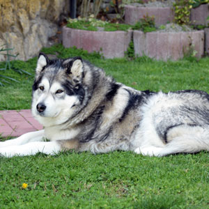
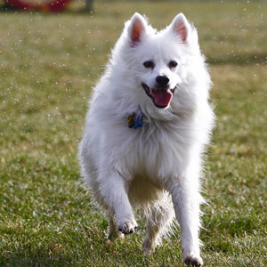
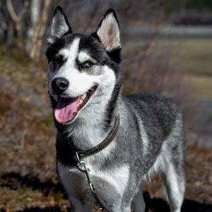
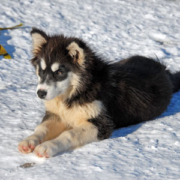

Find a friend:
Please see below for information on our great companions. If you are interested please contact us! We want all of these amazing dogs to go to great homes.
Tucker is 6 years old and this great Alaskan Husky has been apart of our family for a long time! We can vouch for him as he is a great lover, very obedient, and well trained. He deserve's a great home and that could be you!
Lola is a great dog, and very comfortable in the cold climates. She is an Alaskan Malamute and plays well with everybody! Currently still quite young at 3 years old, she would make a great pet for anyone here in Alaska.
Her name is Sandy and maybe not your sled pull but this American Eskimo certianly can be a great helper! She is well trained and groomed, and just wants to find a home she can run free and smile in!
Here we have Bentley! Bentley is one of our most beloved dogs becuase of his great personality, and high energy. He also a Husky and is well groomed, properly trained, and ready to make an impact on your life!
Cute and small is Tiera. He is our youngest pup here and is full of energy! He is a Greenland breed and will grow to be an amazing dog.